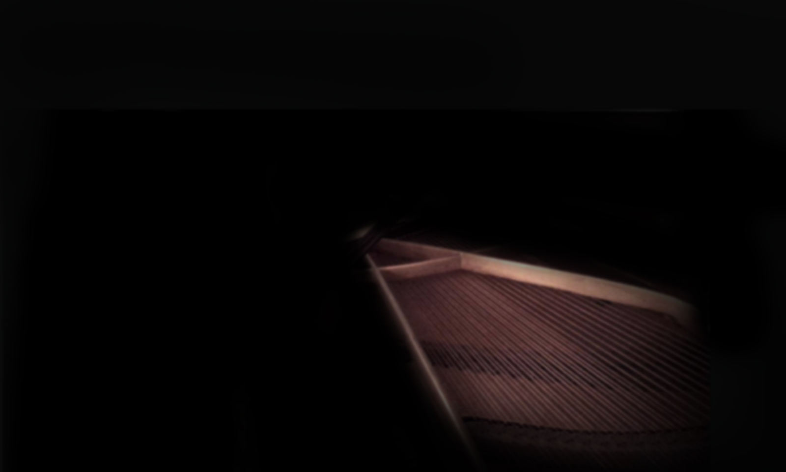

Muzyka
>>>>>>
Piano Jazz Player Super Hero
Pianista, klawiszowiec, kompozytor.
Jako dziecko uczył się pod kierunkiem Henryka Jędrzejewskiego, potem już samodzielnie.
Na co dzień pracuje w zespole Dawida Kwiatkowskiego (platynowa płyta Pop & Roll, płyta Element Trzeci) i w autorskim zespole The Cookies (płyta Push Rewind).
Ma w swoim dorobku występy m.in. z Muńkiem Staszczykiem, Tymonem Tymańskim, Natalią Natu Przybysz, Natalią Niemen oraz Mariką w ramach projektu Klenczon Legenda, z Krzysztofem Cugowskim, Jackiem Wójcickim, Andrzejem Krzywym w programie TVP1 Świat się kręci, z Derrickiem McKenzie (perkusista Jamiroquai), z Marysią Sadowską, Krzysztofem Jarym Jaryczewskim (Oddział Zamknięty), z Mają Kleszcz i jej zespołem Incarnations, ze Sławkiem Uniatowskim, z aktorką musicalową m.in. Teatru Roma Edytą Krzemień.
Współpracował z teatrem Baza: skomponował muzykę do spektaklów „Czarnoksiężnik z Krainy Oz” oraz „Koklusz” w reżyserii Tomasza Zadróżnego
Pianista, klawiszowiec, kompozytor.
Jako dziecko uczył się pod kierunkiem Henryka Jędrzejewskiego, potem już samodzielnie.
Na co dzień pracuje w zespole Dawida Kwiatkowskiego (platynowa płyta Pop & Roll, płyta Element Trzeci) i w autorskim zespole The Cookies (płyta Push Rewind).
Ma w swoim dorobku występy m.in. z Muńkiem Staszczykiem, Tymonem Tymańskim, Natalią Natu Przybysz, Natalią Niemen oraz Mariką w ramach projektu Klenczon Legenda, z Krzysztofem Cugowskim, Jackiem Wójcickim, Andrzejem Krzywym w programie TVP1 Świat się kręci, z Derrickiem McKenzie (perkusista Jamiroquai), z Marysią Sadowską, Krzysztofem Jarym Jaryczewskim (Oddział Zamknięty), z Mają Kleszcz i jej zespołem Incarnations, ze Sławkiem Uniatowskim, z aktorką musicalową m.in. Teatru Roma Edytą Krzemień.
Współpracował z teatrem Baza: skomponował muzykę do spektaklów „Czarnoksiężnik z Krainy Oz” oraz „Koklusz” w reżyserii Tomasza Zadróżnego